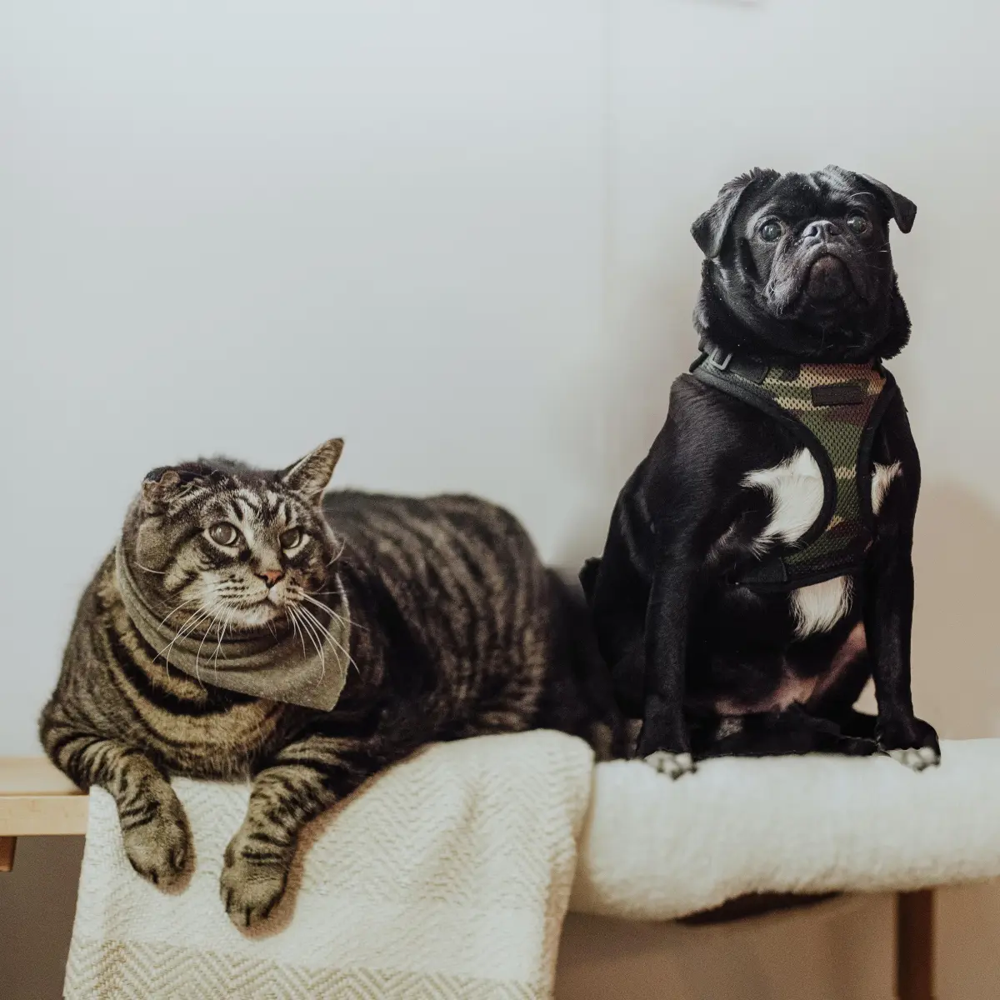
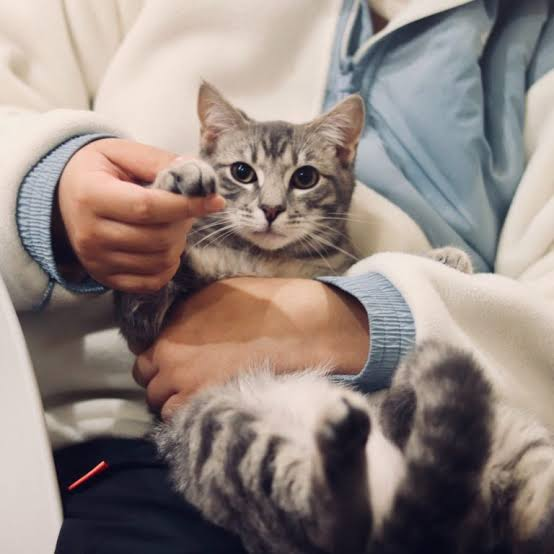
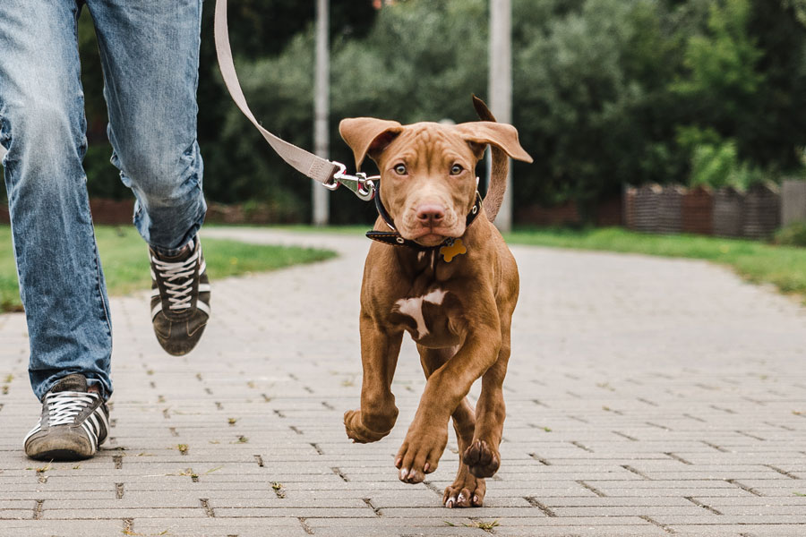

Canine Obedience Training

Learn practical techniques for teaching dogs obedience, good behaviour and positive responses to training.
Duration: Six Months
Course Fee: R1,500
View Course DetailsExplore our range of practical pet care and animal training programmes designed to help you build your knowledge, confidence and skills.
Choose from our six-month programmes or our shorter six-week courses.
Our six-month programmes provide more detailed training and knowledge for students who want to develop their skills in the pet care industry.
Learn practical techniques for teaching dogs obedience, good behaviour and positive responses to training.
Duration: Six Months
Course Fee: R1,500
View Course Details
Develop knowledge of pet grooming techniques, hygiene and general grooming care for animals.
Duration: Six Months
Course Fee: R1,500
View Course Details
Explore animal behaviour and learn how to better understand and respond to the behaviour of pets.
Duration: Six Months
Course Fee: R1,500
View Course Details
Learn the foundations of managing and developing a business within the pet care industry.
Duration: Six Months
Course Fee: R1,500
View Course DetailsOur short courses provide focused learning for students who want to develop specific pet care skills in a shorter period of time.
Learn the basics of caring for puppies, including everyday needs, responsible care and healthy routines.
Duration: Six Weeks
Course Fee: R750
View Course Details
Develop an understanding of basic first aid practices and how to respond to common situations involving pets.
Duration: Six Weeks
Course Fee: R750
View Course Details
Learn the basics of safe and responsible dog walking, including handling and everyday walking practices.
Duration: Six Weeks
Course Fee: R750
View Course DetailsStudents can select one or more courses and receive a discount based on the number of courses selected.
A 15% VAT rate applies to course fees.
Calculate Your FeesTake the next step towards developing your pet care knowledge and skills.
Make an Enquiry